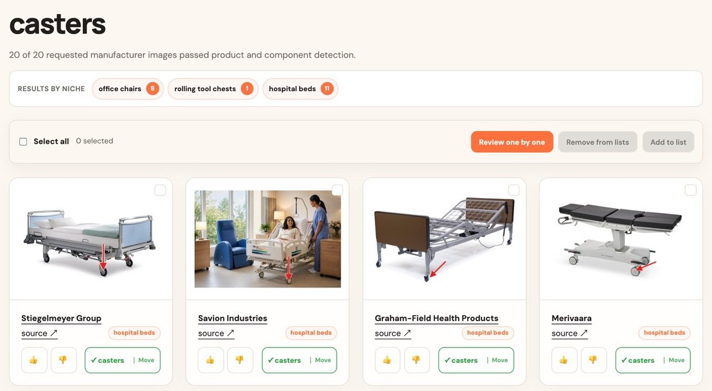
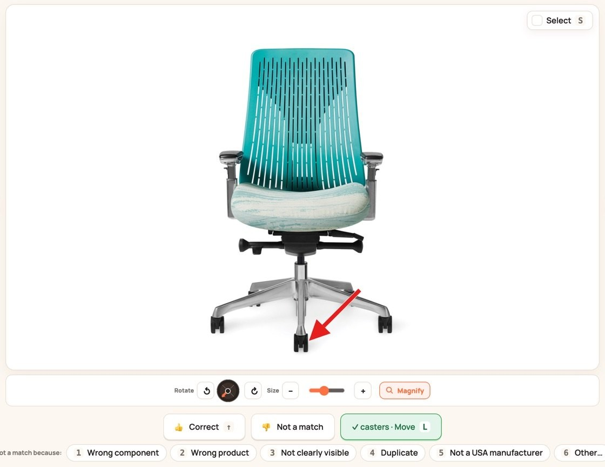
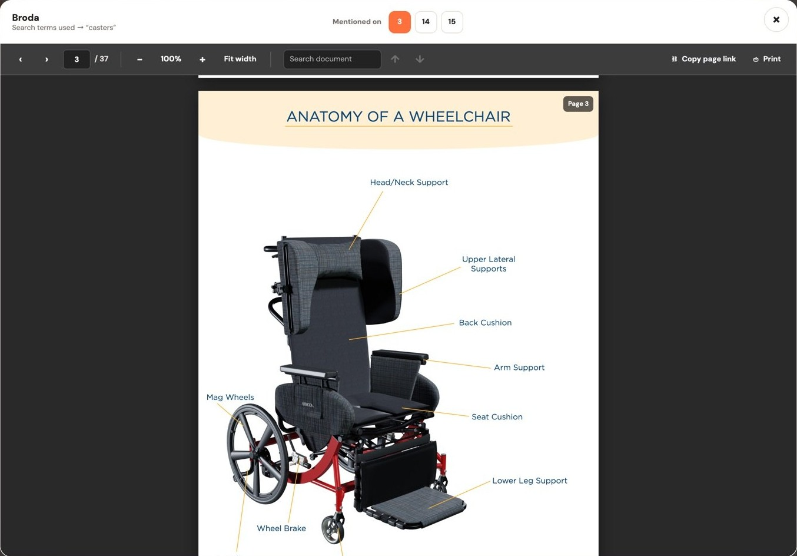
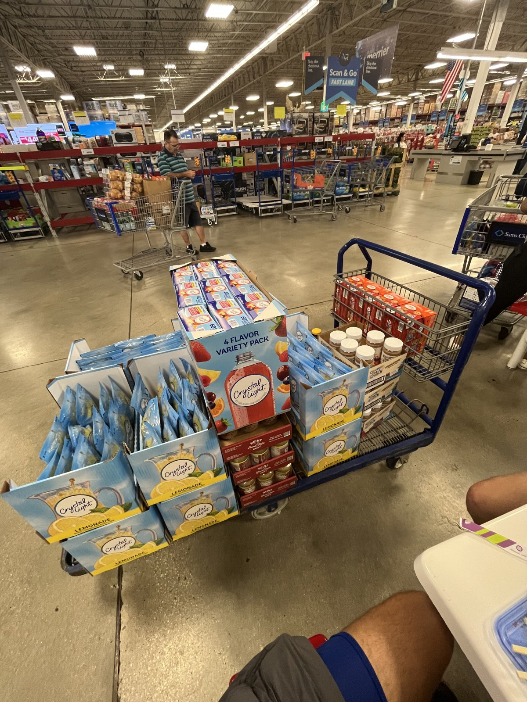
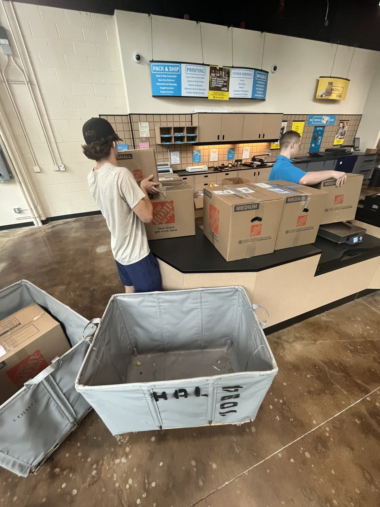

Ideas I’ve turned into something real
These are the ventures and projects where I’ve had the chance to take a vision and see it through, starting with my newest, Artemin.ai.
Artemin.ai
Artemin is a B2B prospecting web app that helps companies that make components, like casters, latches and leveling feet, find manufacturers whose products already use that kind of part. Every lead comes with proof: a product photo with the part marked by an arrow, or the exact manual page that names it.
My role: As co-founder and co-owner, I led the majority of the software buildout and the product, from how the search finds and verifies evidence to the review and list tools, and I help shape our business strategy.
Sales teams guess who might buy. Artemin looks.
A company that sells casters wants to reach manufacturers of hospital beds, office chairs and tool chests. Finding them by hand means hours of digging through catalogs and PDFs, and the final list still can’t prove that each company actually uses the part.
Leads that come with evidence
Artemin finds the products that use a part, lists the companies that make them, searches their websites and manuals, and marks exactly where the part appears. Sales reps get evidence they can put in front of a buyer, and only pay for results delivered.

Every lead comes with a photo
One search for casters found 20 of 20 manufacturers: 11 hospital bed makers, 8 office chair makers and 1 tool chest maker. Each card shows the company, its product, a link to the source and a photo with the part marked.
Click the screenshot to view it full size.
Check each find in seconds
Review mode shows one result at a time with a red arrow on the part. Keyboard shortcuts mark it correct or give a reason it isn’t a match, which keeps future searches from repeating mistakes.
Click the screenshot to view it full size.
Proof from the manual, down to the page
When a part is named in a manual or parts list, Artemin opens the document right to the pages that mention it, like pages 3, 14 and 15 of this wheelchair maker’s parts book.
Click the screenshot to view it full size.Tipsy Towers by Joobie Labs
Tipsy Towers is a social party game my partner and I built under Joobie Labs. I’ve been part of it from the very first idea through product, packaging and brand development.
- Brand positioning: defining who the game is for and how it should feel to play
- Customer experience: shaping the product’s identity, from the mascot to the box
- Go-to-market: planning the launch and promotion to build awareness and sales
Listing photos and production
A lifestyle shot we featured on our listing, plus clips from production as the finished boxes came in.

JOOBIE Distributions
JOOBIE Distributions was an Amazon Seller store offering food, beverages, and everyday items. We started small and scaled quickly by being disciplined about which products we carried.
I also led our move to a complete online arbitrage model, which saved time and resources and improved our product selection and inventory management.
Sourcing, prepping and shipping
What running an Amazon store actually looked like: receiving inventory, prepping boxes, and sending shipments out.

Let’s build something together.
I’m looking for internships, mentors and opportunities in law and business.